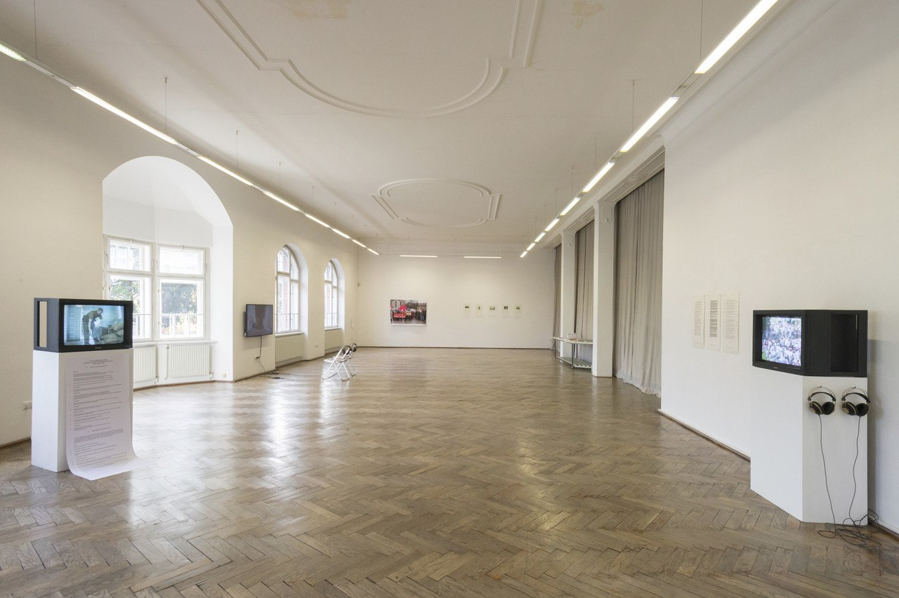

We are thrilled to announce our fifth annual "Solo & CI Tirol Festival" which will traditionally take place in Austria. We believe that our mission is to maintain and strengthen the physical and mental health of our community that becomes vital as never before.
The "Solo & CI Festival" is a safe space for you, your friends and your family, where you will have a chance to get acquainted with contact improvisation, contemporary dance and take part in daily jams. Being surrounded with spectacular Tyrolean landscapes, its impressive mountain ridges, virgin forests, and pure untouchable nature you will get a perfect chance to recharge your batteries and find new meanings and directions.
We share one great passion: contact improvisation. However, in recent years, we feel that contact improvisation has stalled in its development. We want to keep the original purpose of contact improvisation, which is an EXPLORATION. Therefore, this year we offer a wide range of different disciplines to enrich your dance and also look at contact improvisation from a new angle.
Venue
This year we have moved to the Innsbruck city center. We have an amazing location to dance and eat together - Schloss Büchsenhausen.
The program is going to run there with 2 times vegetarian food per day.
As to accommodation, the local dance community would love to offer foreigners a host: Private space to sleep or an affordable Airbnb option.
To get your bed, please contact one of the organizers of the festival via WhatsApp or email:
Lucilla +39 340 100 3628
lucillapatrizi@gmail.com
Tamara +4367763027506
motion.mode.theatre@gmail.com
Address of the festival Venue:
Weiherburggasse 13, 6020 Innsbruck


- 

Teachers
Pawel Kubiak (Poland) - dance teacher and musician

An educator and dancer. He graduated CUUD Breath Integration School. During his studies in Poznań, he worked in a forest kindergarten, and led CI classes and movement workshops for parents and children.
He organizes jams, and workshops, and lead classes in various cities in Poland and festivals (Warsaw Flow, FRU festival, Israel CI Convention)
Paweł draws inspiration from practicing the Feldenkrais Method and AcroYoga. He enjoys learning new things, doing less (sometimes too much), and following curiosity and playfulness.
He explores improvisation in motion and playing music - he is fascinated by combining these worlds and the dialogue between them.

Class description - moved to move
(2 classes - 6 hours)
During the process of learning to dance Contact Improvisation, each of us acquires the language that we use on the jams. Sometimes we can unknowingly and habitually repeat certain sentences or consciously use only known words. As an example, we can have jam dancing only in duet and not exploring other possibilities.
In this class we will notice language we use and try learn new words, which will make our conversation more interesting.
We start slowly by rolling our head on the floor. Maybe there are many words we have not heard before? Then we take that gentle quality into quite small talk and crazy conversation - trying to still listen carefully.
Jam is the best teacher. We will talk to him using new words, being playful and open to the unknown
Music:
“I am fascinated by exploring the world of music combined with movement. When I play, I dance - because I play with my body. I am interested in exploring the world of didgeridoo and its production. Flute, jaw harp, glass, water, silence - I like to find sounds in instruments and less obvious things. I am interested in finding a dialogue between movement and music, discovering their similarities.”
dance: Contact Improvisation - postcard from Barcelona #3
music: youtube
facebook
Tamara Maksymenko

Tamara Maksymenko is a professional dancer, choreographer, and teacher of contact improvisation and contemporary dance for 17 years already. She has been teaching many workshops all over the world (Poland, Spain, Israel, Austria, Italy, Greece, Finland, Egypt, Germany, Russia, Ukraine, Morocco, Bulgary, Sweden, Portugal, France, and Turkey). She is the founder of Motion Mode Dance Theatre (MMDT) and the creator of many dance projects.
28 years of dance experience (since the early age of 4). She got medical education in body therapy and sociology at Dnipropetrovsk National University and trained at the Physical Theatre in Intragna (Switzerland) with Thomas Mattler.
Now Tamara is a member of the Ukrainian Contemporary Dance Platform Association and she is a member of OFFTANZ Tirol Association (Austria). The founder of "Solo & CI Tirol Festival" and "West meets East".
Contact Improvisation Workshop:
(1 class - 2 hours)
Hands, hooks, touch. During this workshop, we will look at some patterns where we use arms and hands mostly. The workshop will base on improvisation research and include clear forms of physical communication. How can we gently grab a partner giving him/her space to move? And what kind of dynamic between two people creates with hooks?
Olena Polianska - Ukraine (Crimea)


a performer, choreographer, teacher of contemporary dance and contact improvisation, and philologist. She began her dance way as a performer and impro-dancer, participating in festivals (PushOK, Moving Body, CI and video dance projects DANCEpavilion, Theater Almanac, Fairytale today, The contact improvisation convention Israel, International Dance Festival Warsaw CI FLOW, and others).
Was a co-organizer of the festival of street performances. Week performance NICHOGOsobi in Lviv; (Lviv), was a co-curator and teacher of the Laboratory of Contemporary Choreography, FreeDanceLab (Simferopol) and the laboratory of the movement, M.У.B (Simferopol), began to receive a master's degree in Contemporary dance art-practices (ARB Vaganova, St.Petersburg), now lives and works in Germany:
- resident of the Tanzkomplizen - TanzZeit e.V.: teacher in week-workshop
“Deine Show”, workshop “Tanz wahrnehmen”, dance-workshop in School Format “Moving the classroom” (Berlin)
- dancer in performance - Nicht gern; choreographie and concept: Rafaële Giovanola. A project " Ein mensch wie ihr; by Vier.Ruhr, Theatre Alliance: Mülheimer Theatertage, Ringlokschuppen, Theater an der Ruhr (Stadthalle, Mülheim an der Ruhr)
- dancer in SoundSteps performance; International Dance and Music Youth Exchange, Beyond Borders e.V. (Wiese e.G., Hamburg)
- resident of the Ringlokschuppen Ruhr Theatre (Mülheim an der Ruhr)

IMPROVISATION workshop:
(1 class - 2 hours)
What motivates my movement?
What motivates me while moving?
I work with attention on several levels according to the principle of cumulation: on the first physical (muscles) - work with body tone, balance, rotation, and development of dexterity. For movement, I offer simple tasks for work with speed, trajectory, displacement, repetitions, cyclicity, dynamics, amplitude, the direction of movement, and others. Then the second level is added attention to space: direct work with vision, fixing a view of the environment and oneself in it. Feeling in the present moment. The main focus is on haptic communication with space. At the third level, I pay attention to the sensation of my body, check how I touch the floor, where my body weight is, and where my attention is focused. I suggest giving time and space for the sensory system, to feel movement with skin, muscles, and bones. Feel the sounds and vibration, silence. To observe where a real movement is born, to follow it.
The last level will work with the composition, space, and time; with the object, with choreography.
Org Team
Tamara Maksymenko. (Ukraine - Austria)

Tamara Maksymenko is a professional dancer, choreographer, and teacher of contact improvisation and contemporary dance for 17 years already. She has been teaching many workshops all over the world (Poland, Spain, Israel, Austria, Italy, Greece, Finland, Egypt, Germany, Russia, Ukraine, Morocco, Bulgary, Sweden, Portugal, France, and Turkey). She is the founder of Motion Mode Dance Theatre (MMDT) and the creator of many dance projects.
28 years of dance experience (since the early age of 4). She got medical education in body therapy and sociology at Dnipropetrovsk National University and trained at the Physical Theatre in Intragna (Switzerland) with Thomas Mattler.
Now Tamara is a member of the Ukrainian Contemporary Dance Platform Association and she is a member of OFFTANZ Tirol Association (Austria). The founder of "Solo & CI Tirol Festival" and "West meets East".
Question as to participation:
Whatsapp: +4367763027506
soloandcityrolfest@gmail.com
Sasha Portyannikova
dance artist, choreographer, and teacher
Graduated from Vaganova Ballet Academy (MA’2013), cofounded dance cooperative Isadorino Gore with Dasha Plokhova in 2012, became Fulbright Visiting Scholar in 2018, and danceWeber in 2019.
Participated in international scholarship programs with residences in the Netherlands, Switzerland, Germany, Austria, Scotland, Spain, and the USA. Cooperated with Amnesty International, Goethe Institute, V-A-C Foundation, ZKM, Garage Museum of Contemporary Art, Moscow Museum of Modern Art, and others.
Sasha creates dances, curates projects, and teaches dance in Academia and primary school. She considers dance as a cultural, social, political, and research practice.
General questions:
soloandcityrolfest@gmail.com
Lucilla Patrizi

She finished her biology study in 2017 but has been drawing since always. She is a quick drawer and a long-term observer, the aesthetic of what already exists and the power of biological processes in nature fascinate her. She is not a magician, She is not inventing new stuff. She tries to make hidden structures visible as sketches or words on paper, sculptures, or paintings.
Accommodation request:
soloandcityrolfest@gmail.com
The Festival has its “working hours” and “free time” which we offer all participants to spend time with us in the mountains or in the place of leisure in Tirol.
The yellow color in the timetable is our “working time”, where we study, move, talk, and research.
The green color is meal time and `blue time is free time for participants who can go to the mountains or spend time somewhere else.
| The policy of the festival: Amount of spots at the festival is limited. Your registration insures your participation. If you’re unable to join us because of illness or another personal issue, your prepayment won't be returned. We thank you for your understanding and respect of this festival policy. |
Registration for only participation (classes, jams, lectures, and workshops). Pay attention to book your food please follow this link:
We are happy to announce the Early bird registration:
Before the 1st of April - 10 first registration is only for 180 euros.
Registration inquires paying 50% of the cost.
By clicking on the button below you agree with our policy and you make sure to have spot on SOLO and CI Tirol Festival 2022.